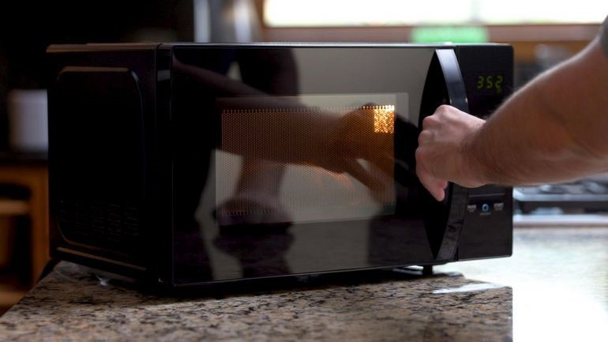
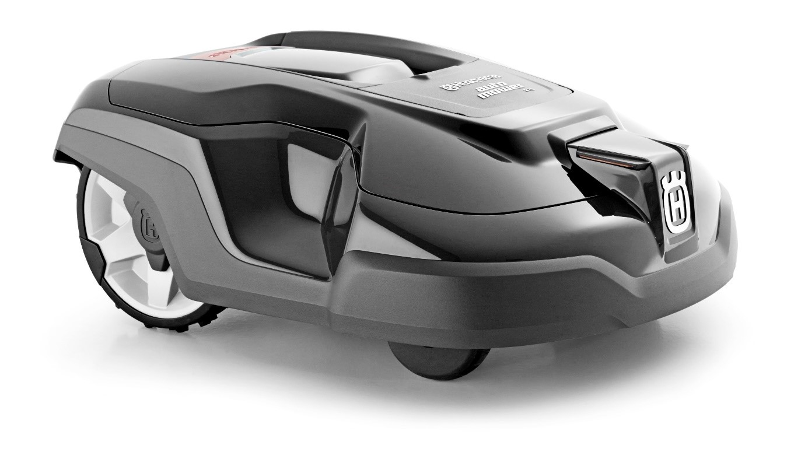

Faites vos courses en toute sérénité avec les caméras intérieures qui vous permettront de voir ce qui se trouve dans votre frigo n’importe où, n’importe quand grâce à votre smartphone
Faites des mémos, photos, planning et tâches à partager
Connectez-vous à internet, diffusez de la musique et des films directement sur l’interface de votre frigo
Micro-onde connecté Amazon

Lancez votre micro-onde grâce à l’assistant Alexa intégré dans ce micro-onde Amazon.
Certains programmes sont automatiquement configurés tels que la décongélation et le réchauffage de plats.
Bénéficiez des commandes Alexa en ajoutant des items dans votre panier Amazon.
Tondeuse connectée Husqvarna

Tondez votre pelouse efficacement avec cette tondeuse automatique.
Jusqu’à 1200m² de terrain et 35% de pente, elle s’adapte à n’importe quel jardin.
Restez connecté avec votre tondeuse en recevant des notifications dès que la tonte est nécessaire, vous pourrez également piloter votre tondeuse à distance grâce à l’application.